Docker Builder Tool
操作ガイド
選ぶ。設定する。確認して、生成する。
AIペンギンと一緒に、Docker構成を一歩ずつ。

ツール概要・動作環境
Docker Builder Toolは、モジュールを選び、入力した設定からdocker-compose.ymlと、必要なサービスのDockerfile等を生成するデスクトップツールです。コンテナの起動や、アプリのソースコードを自動作成するものではありません。
| 目的 | 必要なもの |
|---|---|
| ソースからアプリを起動する | Windowsの作業フォルダに現行ソース、Node.js 22.12以上とnpm。既存の依存設定はElectron 45.0.0です。 |
| 構成ファイルを生成・保存する | Docker環境は不要です。ファイルは利用者が指定した場所へ保存します。 |
| 生成構成を実際に動かす | 別途、Docker EngineとDocker Composeを使える環境、および必要なアプリコード・依存ファイルが必要です。 |
| このHTMLを読む | 画像・CSS・JavaScriptを含むフォルダ一式と、ローカルHTMLを表示できるブラウザ。外部CDNは使用しません。 |
Windows配布版と同梱マニュアル
- インストールしたDocker Builder Toolを起動します。
- 「ヘルプ」→「ユーザーマニュアル」を選ぶと、既定のWebブラウザでこのマニュアルを開きます。
- HTML・画像・レシピは同梱されているため、閲覧にインターネット接続は不要です。外部の実行結果リンクを開く場合のみ接続が必要です。
ソースからアプリを起動する
- 現行ソースを展開したアプリのフォルダでターミナルを開きます。
- 初回、または依存関係を入れ直す際は
npm ciを実行します。 npm startを実行してアプリを起動します。- 「ヘルプ」→「バージョン情報」で
0.3.0 Release 1を確認します。
画面構成と基本操作
基本の流れは「モジュール」→「構成入力」→「生成結果」です。上部タブを順に使います。
起動直後のモジュール一覧
- 1「モジュール」で利用する機能を選びます。
- 2選択後に「構成入力」へ進みます。
- 3生成されたファイルは「生成結果」で確認します。
| 場所 | 操作と役割 |
|---|---|
| ファイル → 新規構成 | 選択・入力・生成結果・設定確認をリセットして別の構成を始めます。必要な生成結果は先に保存してください。 |
| モジュール | 利用する機能の行をクリックします。チェックボックス式ではありません。 |
| 構成入力 | プロジェクト名、各モジュールの設定、設定確認チェックを操作します。 |
| 生成結果 | Composeとサービス別生成ファイルを確認・編集・コピー・個別保存します。 |
| 設定 → 設定... | フォルダ設定と外観設定を開きます。 |
| ヘルプ | ユーザーマニュアル、バージョン情報、ログファイル閲覧を利用できます。 |
モジュールの選択
「モジュール」タブで利用する行をクリックします。もう一度押すと解除できます。選択された行の背景とアイコン枠がテーマに応じて変わります。
ライトテーマで選択した行
- 1行をクリックして選択・解除します。ライトでは薄灰色と濃灰色の枠になります。
ダークテーマの選択ハイライト
ダークテーマの選択ハイライト。配色以外の操作は共通です。
枠は未選択時から透明3px分を確保し、アイコン枠の外寸は66px固定です。選択・解除で文字位置や行の高さは変わりません。左端の縦アクセント線はありません。
| テーマ | 選択背景 | アイコン枠 |
|---|---|---|
| 自動 | OS設定に応じてライト／ダーク | 同左 |
| ライト | #E8E8E8 | #555555 |
| ダーク | #263A54 | #60A5FA |
| 青 | #E0EDFF | #2563EB |
| 緑 | #E0F5E7 | #198754 |
| 黄 | #FFF2B3 | #C58A00 |
| オレンジ | #FFF0D6 | #C86416 |
| 赤 | #FFE5E5 | #DC3545 |
| ピンク | #FFE5F0 | #D63384 |
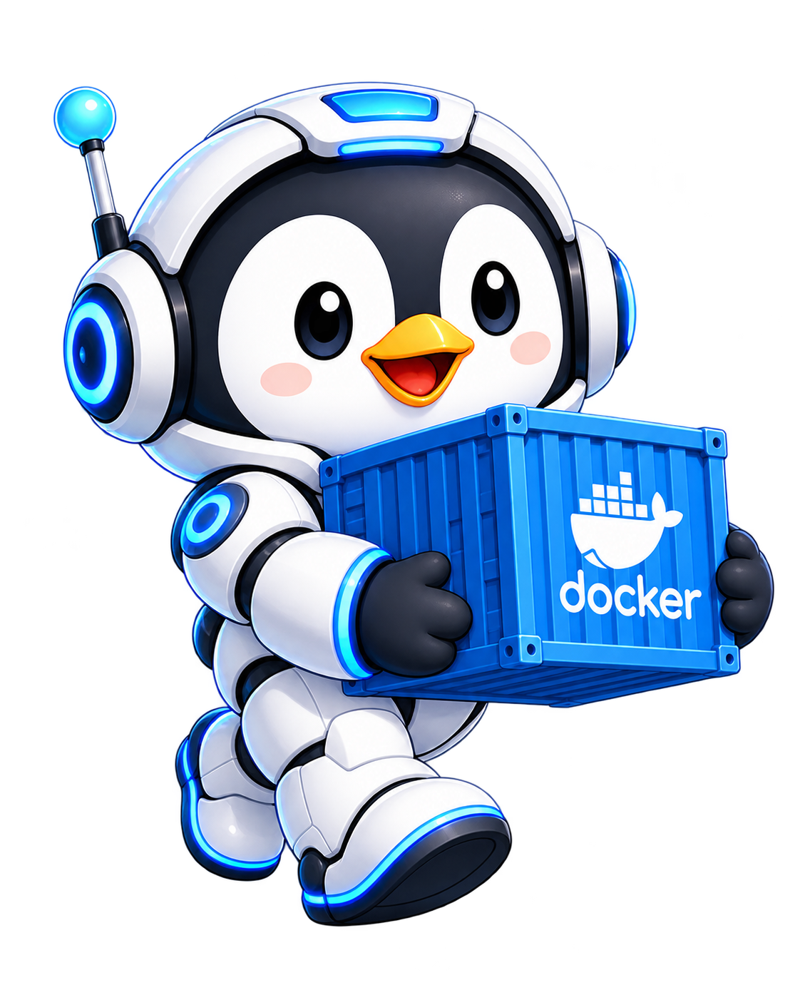
必要なモジュールだけ選ぶ
複数モジュールを選ぶと、それぞれが「構成入力」に表示されます。依存するDBを必要とするモジュールもあるため、レシピの組み合わせを確認してください。
構成入力・設定確認
入力 → 確認 → チェック
- 「構成入力」タブを開き、「共通設定 / 構成実行」の「プロジェクト名」を入力します。サービス名等の接頭辞になります。
- 初期表示では先頭のモジュールだけ展開されています。各ヘッダーのモジュール名または矢印を押して開閉します。複数を同時に開けます。
- バージョン系列、イメージ形式 / 完全タグ、公開ポート、DB設定、データ保存方式などを確認します。
- 確認したモジュールの右上にある「設定確認」に手動でチェックを入れます。チェックだけではパネルは閉じません。
- 全件確認済みになったら「構成を実行」へ進みます。0件選択時や未確認がある間は生成できません。
モジュール別の折りたたみと確認
- 1確認済み件数を確認します。最初は0件です。
- 2モジュール名・矢印で開閉します。
- 3入力を確認して「設定確認」にチェックします。
全件確認後は構成を実行できます
- 1全件確認済みで「構成を実行」が有効になります。
- 2確認済み1 / 1です。
設定値変更で確認済みが解除されます
- 1変更後は「構成を確認」になり、生成できません。
- 2変更したMySQLだけ再確認が必要です。
パスワードは表示と実データを分けて扱います
MySQLの秘密値は初期状態でマスク
- 1実データを保持したまま表示だけをマスクします。
- 2「パスワードを表示」で見え方だけを切り替えます。
- 3「コピー」は明示操作時だけ実値をコピーします。
- 初期表示はマスクです。「パスワードを表示」で表示のみを切り替えます。パネルを閉じると再びマスクされます。
- 「コピー」はマスク中でも実際の値をコピーします。空欄では使えず、成功通知にパスワード自体は表示されません。
- クリップボード履歴や他のアプリに読まれる可能性があります。必要なときだけコピーしてください。自動消去はしません。
- 対象はMySQL・MariaDB・PostgreSQLのパスワード、LaravelのDBパスワード、phpMyAdminのDBパスワードです。WordPress・Redmineは選択したDBの設定を利用し、専用の秘密値入力欄はありません。
- 画面上のマスクは暗号化ではありません。生成したComposeには必要なパスワードが平文で含まれるため、共有・公開前に内容を確認してください。
永続化とイメージ情報
独立した「永続化」タブはありません。各モジュール内の「データ保存方式」を使います。名前付きボリュームとバインドマウントでは表示項目が切り替わります。「参照」はバインド先の既存フォルダを選ぶ際に利用します。
「Dockerイメージのバージョン情報」の「オンライン更新」は、Docker Hubのメタデータを取得して選択候補を更新します。イメージやモデル自体のダウンロード・起動ではありません。取得に失敗した場合も既存キャッシュを維持します。
目次へ戻る ↑構成を生成する
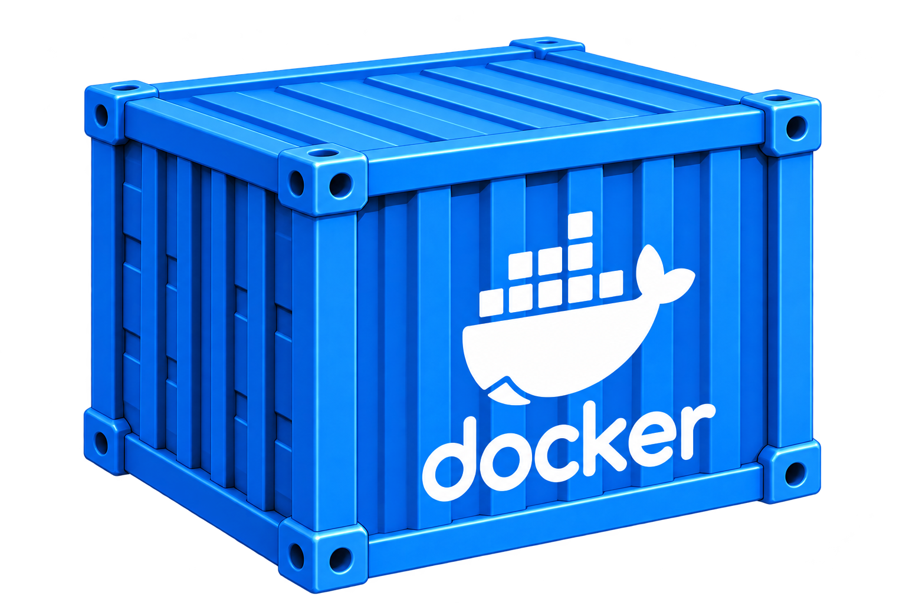
全件確認後に構成を実行
確認済み件数が全件になり、ボタンが「構成を実行」になってから押します。赤い「構成を確認」は未確認がある状態で、クリックできません。
- 全モジュールの「設定確認」にチェックがあることを確認します。
- 「構成を実行」を押します。「ファイル」→「生成開始」でも同じ確認条件が適用されます。
- エラーが表示された場合は、対象の入力欄へ戻って修正し、再確認します。ポート範囲・重複・DB依存・イメージの検証はチェック後も実行されます。
- 生成後、「生成結果」タブを開きます。
Node.jsは利用者のアプリとpackage.json・整合するlockfileが必要です。Flaskは利用者のPythonコードと依存定義、Laravelはソース・Composer依存・APP_KEY等が必要です。アプリがこれらを完成した本番アプリとして生成することはありません。
目次へ戻る ↑生成結果とファイル保存
左右で保存するファイルが異なります
Node.js単体：生成結果
- 1左の「ダウンロード」でComposeを保存します。
- 2保存するファイルを1つずつ選びます。
- 3右の「ダウンロード」で選択ファイルを保存します。
Node.jsのサービス別Dockerfile
- 1Dockerfile.nodejs / Dockerfile.nodejs.dockerignoreを切り替えます。
- 2ファイル内容とFROMを確認します。
- 左側の「生成された docker-compose.yml」でサービス名・ポート・volumes・buildを確認します。
- 左の「ダウンロード」を押し、OSの保存ダイアログで
docker-compose.ymlとして保存します。 - 右側の「表示・保存するファイル」で、サービス別のDockerfile等を選択します。
- 右の内容を確認し、右の「ダウンロード」で表示中の1ファイルだけを保存します。複数ある場合は選択を切り替えて繰り返します。
- 「構成ファイルの配置・起動ガイド」を開き、Composeから参照できる相対配置になっていることを確認します。
構成ファイルの配置・起動ガイド
- 1A. ファイル配置で相対パスを確認します。
- 2確認後に「閉じる」で戻ります。
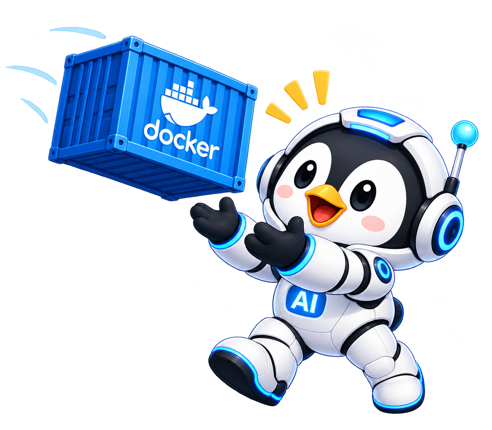
ファイル名と配置も構成の一部
フォルダ設定や個別保存だけでは、複数ファイルの配置整合性は保証されません。ZIP出力・一括フォルダ保存はありません。
Windowsの保存例は %USERPROFILE%\Documents\DockerProjects\nodejs-basic\ です。「ドキュメント」がOneDrive等へ移動されている場合は実際の場所を確認してください。任意の保存先も利用できます。
DockerProjects/
└── nodejs-basic/
├── docker-compose.yml ← アプリ生成
└── nodejs/
├── Dockerfile.nodejs ← アプリ生成
├── Dockerfile.nodejs.dockerignore ← アプリ生成
├── package.json ← 利用者が準備
├── package-lock.json ← 利用者が準備
└── server.cjs ← 利用者が準備この例ではComposeの build.context: ./nodejs と build.dockerfile: Dockerfile.nodejs に合わせます。ignoreファイルも同じビルドコンテキストに、生成された名前のまま置きます。
生成結果は編集できますが、編集後は配置ガイドとの不一致に注意してください。「クリア」や「新規構成」の前に必要な内容を保存します。
目次へ戻る ↑設定・テーマ・About
「設定」→「設定...」を開く
左メニューの「フォルダ設定」と「外観」は別の確定操作を持っています。
| 操作 | 確定する内容 | 画面を閉じるか |
|---|---|---|
| 外観の「適用」 | 選んだテーマを即時反映・永続保存。パス入力の検証とは独立。 | 閉じません |
| 下部の「保存」 | フォルダ設定だけを検証して保存。テーマには関与しません。 | 成功通知後も閉じません |
| 「初期化」 | アプリルート以下に既定フォルダを作り、入力欄へ設定。永続保存は別途「保存」。 | 閉じません |
| 「閉じる」／Esc | 未保存フォルダ・未適用テーマの入力だけを破棄。確定済み設定は維持。 | 閉じます |
フォルダ設定
フォルダ設定と保存・初期化・閉じる
- 1「初期化」は既定フォルダを作り入力します。保存は別操作です。
- 2「保存」はフォルダ設定だけを確定します。
- 3「閉じる」は未保存入力を破棄します。
プロジェクトフォルダ、docker-compose.yml 保存場所、Dockerfile 保存場所、ログ保存場所を指定します。現行仕様では空欄を許容します。「保存」を押すと、空欄ではないパスが存在するフォルダかを検証します。
アプリのルート/ ├── Project/ │ ├── docker-compose/ │ └── Dockerfiles/ └── logs/
「初期化」が作る既定の名前は上記です。既存ファイルやリンクとの衝突・書き込み権限で作成に失敗した場合は、説明を確認してください。既存ファイルを削除・上書きする操作ではありません。
不正なパスはフォルダ設定で修正
- 1最初の不正な入力欄へ移動します。
- 2項目名と修正方法が下部にも表示されます。
保存時に不正なパスがあれば「フォルダ設定」に自動で切り替わり、問題の欄が強調され、最初の欄へフォーカスします。存在するフォルダを選ぶか、任意項目を空欄にして再保存してください。保存失敗時も入力内容は保持されます。
なお、現在の実装ではアプリ自身の docker-builder.log はこのログ保存場所に切り替わらず、開発時はアプリルート、配布版は実行ファイルと同じフォルダにあります。Aboutに表示される実際のパスを確認してください。
テーマを適用する
9テーマの選択と適用
- 1選択だけでは外観は変わりません。
- 2「適用」で外観へ反映し、その場で保存します。
適用後は保存ボタン不要
- 1「適用中」「保存済み」を確認します。
- 2閉じても適用済みテーマは維持されます。
- 左メニュー「外観」を開き、9種類のテーマカードから選択します。この段階では外観は変わりません。
- 「適用」を押すとアプリ全体へ即時反映され、その場で永続保存されます。下部の「保存」は不要です。
- 「閉じる」やEscで閉じても、適用済みテーマは維持されます。適用せずに閉じた選択は破棄されます。
- 次回起動時も適用済みテーマが復元されます。「自動」はOSのライト／ダークに追従します。
メイン画面右上のテーマ切替ボタンも利用できます。フォルダ設定にエラーがあってもテーマの適用は独立して行えます。プレビュー機能とキャンセルボタンはありません。
Aboutとログ
バージョン情報
アプリ名・バージョン・開発者・ライセンスを確認できます。ログの保存先は画面下部に表示されます。
「ヘルプ」→「バージョン情報」でアプリ名、現在のバージョン、開発者、ライセンス宣言、ログの実際の保存先を確認できます。バージョンはアプリ情報から自動取得されます。ISCはpackage.jsonの宣言で、独立したLICENSEファイルは現時点でありません。
GitHubリンクは固定された公開プロジェクトページを外部ブラウザで開きます。GitHub認証・トークン入力・構成ファイル送信の機能ではありません。「閉じる」またはEscで戻ります。
目次へ戻る ↑組み合わせ例
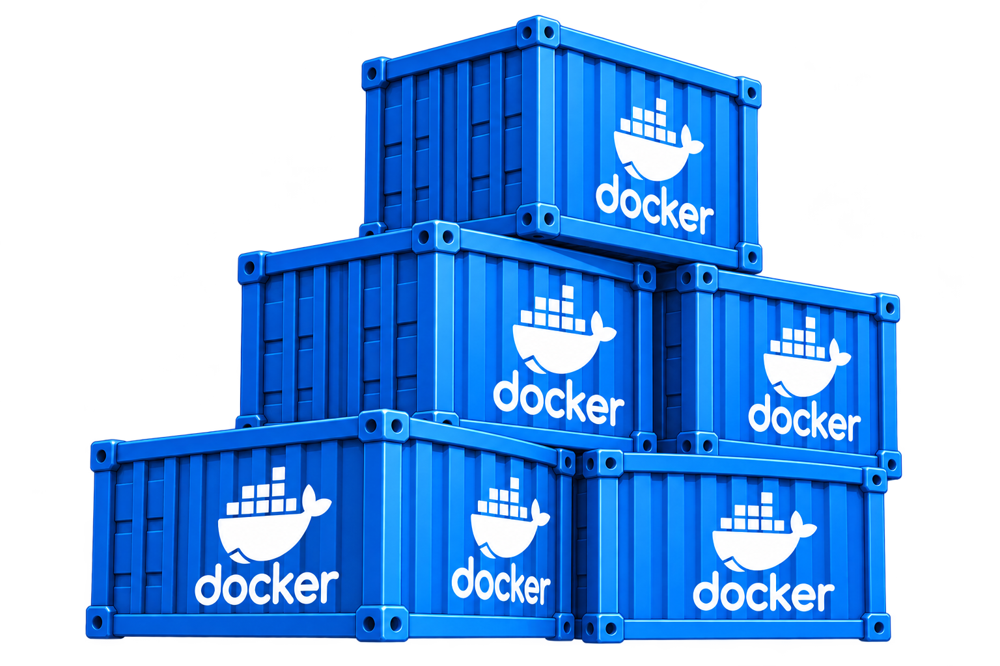
| まず試す構成 | 確認すること |
|---|---|
| Nginx単体 | 静的Web公開 |
| Apache単体 | 静的Web公開 |
| Node.js単体 | 開発用HTTPアプリ |
| Nginx＋Node.js（独立HTTP） | NginxとNode.jsの独立HTTP応答。リバースプロキシ連携は含まない。 |
| Python Flask単体 | Python開発用HTTPアプリ |
| PostgreSQL単体 | SQLデータベース |
上級へ進む構成例
級の判断基準は難易度の目安を参照してください。
| 構成例 | 学ぶこと |
|---|---|
| Nginx＋Node.js＋PostgreSQL＋Redis | リバースプロキシ、DB更新、キャッシュの失効とTTL、依存サービスの準備待ちを横断して扱います。 |
| Nginx＋Flask＋PostgreSQL＋Redis | Pythonアプリ・DB・Redisの接続、DB更新後のキャッシュ失効、プロキシと準備待ちを横断して扱います。 |
| Nginx＋WordPress＋MariaDB＋phpMyAdmin | 公開URLとプロキシの整合、DB管理、DBとWordPressファイルの両方のバックアップ・別環境への復旧を扱います。 |
エラーと対処
| 困ったとき | 原因と対応 |
|---|---|
| 「構成を確認」で押せない | 未確認が残っています。各モジュールの入力を見直し「設定確認」をチェックします。選択0件も生成不可です。 |
| 確認済みだったのにチェックが外れた | 実際の設定値やプロジェクト名が変更されています。変更箇所を確認して再チェックします。 |
| ポートの重複・範囲エラー | 各ホスト公開ポートを1〜65535の異なる値にします。本稿のレシピは原則TCPです。TCP/UDP切替UIはありません。 |
| DBが必要というエラー | WordPress、Laravel、Redmineなどに必要な対応DBを選択し、サービス名・DB名・ユーザー・パスワードを揃えます。 |
| Dockerfileやpackage-lock.jsonが見つからない | Compose基準の相対パスと実際の配置を確認します。Node.jsのpackage.jsonとlockは利用者が整合したものを用意します。 |
| フォルダ設定を保存できない | 問題の欄と下部の説明を確認し、存在するフォルダまたは空欄に修正します。設定ファイルへの書き込み権限も確認します。 |
| 画面が表示されてもDB連携できない | DBの準備完了を待ち、接続先はコンテナ内のlocalhostではなくComposeのDBサービス名にします。HTTP成功だけでSQL成功とは扱いません。 |
| バインドマウントしたらファイルが消えたように見える | ホストのマウントがイメージ内ファイルを隠している可能性があります。データ削除と決めつけず、ホスト側の内容・権限・配置を確認します。 |
| イメージ更新が失敗する／古い・未検査表示 | 通信・配布元の制限、カタログ状態を確認します。未検査は安全確認済みではありません。サポート切れは避け、例外を安易に使わないでください。 |
生成後にDocker環境で確認する手順
docker compose config -q docker compose up -d --build docker compose ps docker compose logs --tail=100 docker compose down
構成フォルダで実行します。追加の compose.manual.yml があるレシピでは、全コマンドで -f docker-compose.yml -f compose.manual.yml を併用します。レシピごとのURLやSQL確認も実施してください。
応用と補足資料
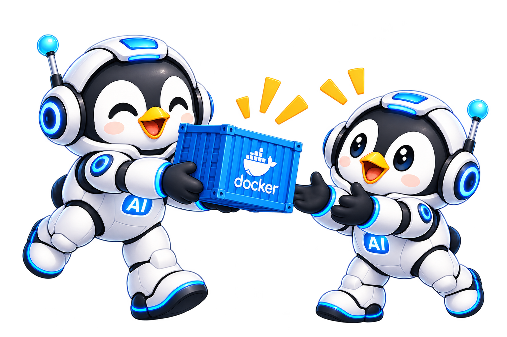
生成物と追加ファイルを引き継ぐ
レシピでは、アプリ生成ファイルを generated/、利用者が用意するコード・設定の例を additions/ に分けています。実利用時はそれぞれの中身を、レシピで指定する構成フォルダへ配置します。
全19モジュールと役割
| モジュール | 役割・制限 |
|---|---|
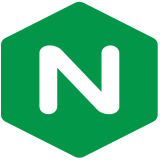 Nginx（Web サーバ） | HTTPの入口・静的ファイル／追加設定でプロキシ |
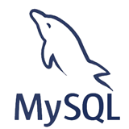 MySQL（DB サーバ） | 永続SQLデータベース |
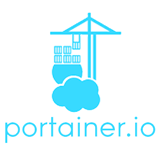 Portainer（コンテナ管理 GUI） | 管理UI（接続先は別途必要） |
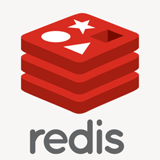 Redis（キャッシュサーバ） | キー・値キャッシュ |
| phpMyAdmin | MySQL/MariaDB管理画面 |
| MariaDB（DB サーバ） | 永続SQLデータベース |
| Apache（Web サーバ） | HTTPの入口・静的ファイル／追加設定でプロキシ |
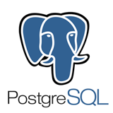 PostgreSQL（DB サーバ） | 永続SQLデータベース |
| Memcached（キャッシュ） | メモリキャッシュ |
| RabbitMQ（メッセージキュー） | メッセージキュー |
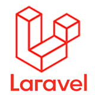 Laravel アプリ | PHP CLI・HTTP 8000の開発サーバー |
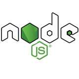 Node.js アプリ | HTTPアプリ・利用者がソースを用意 |
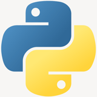 Python アプリ（Django / Flask） | Flask開発用HTTPアプリ |
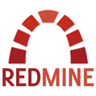 Redmine（プロジェクト管理） | 課題管理アプリ |
| WordPress（CMS） | Apache内蔵CMS |
| Jenkins（CI サーバ） | ジョブ実行・開発検証 |
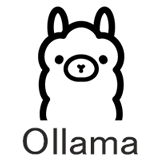 Ollama（ローカル LLM） | ローカルモデルAPI |
| SteamCMD（ゲームサーバ用） | ゲーム資材の取得ツール |
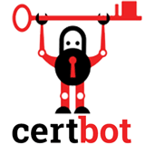 Let's Encrypt（Certbot） | 証明書取得用ワンショット処理 |
- LaravelはPHP公式CLI＋開発サーバーのHTTP 8000が基本です。PHP-FPMをHTTPポートとして公開する方式ではありません。本番用構成ではありません。
- Certbotの証明書発行、Nginx/Apache側のHTTPS連携は公開ドメイン・DNS・到達性・設定が必要で、このマニュアルの実動作検証範囲に含みません。
- Portainerは初期UIまでの例で、生成ComposeはDockerソケットを自動マウントしません。そのままでDocker管理が完成するとは扱いません。
- OllamaはAPI構成が対象です。モデル取得・GPU・推論の動作は別途準備と確認が必要です。
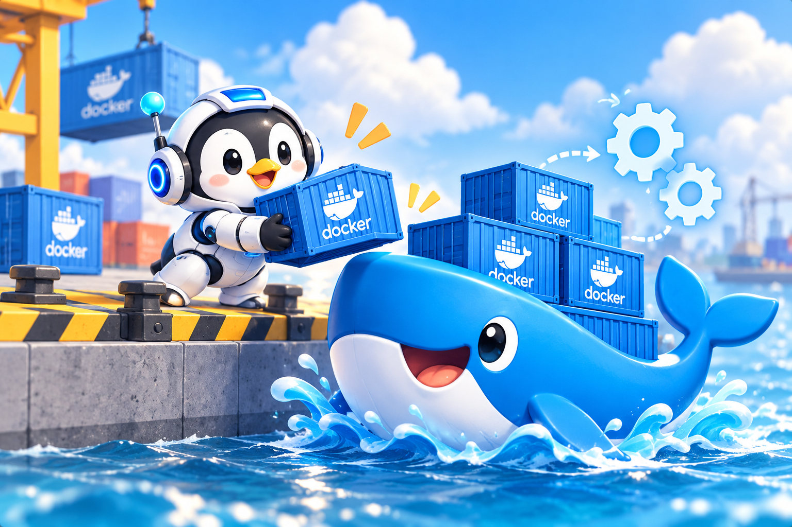
目次へ戻る ↑